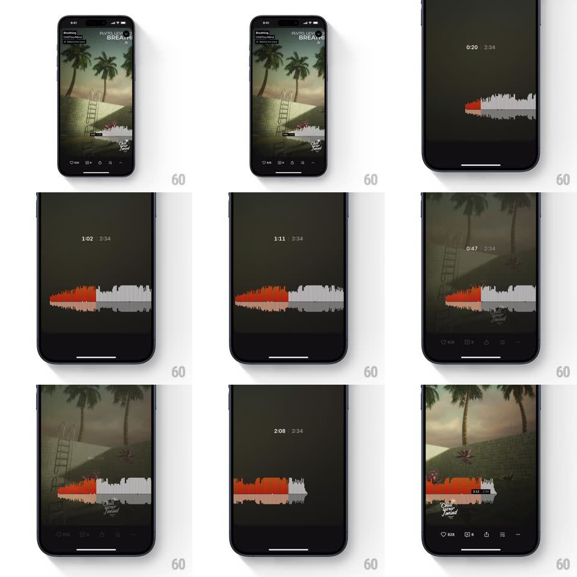

Media
Frame-by-frame

Rebuild this interaction 1:1: SoundCloud's waveform scrub - dragging the mini waveform on the player dims the whole screen and raises a centered, full-width seekbar (played orange / unplayed gray) with the current time and track length on top for precise seeking.

Rebuild this interaction 1:1: SoundCloud's waveform scrub - dragging the mini waveform on the player dims the whole screen and raises a centered, full-width seekbar (played orange / unplayed gray) with the current time and track length on top for precise seeking. ## Integration Integration: stack-agnostic spec - springs given as stiffness/damping, timed motions as duration + curve; map every value to your framework and animation library of choice. ## Scene Player with palm-tree artwork, track title "Breathing", and a small inline waveform. Scrub mode: darkened background, giant waveform centered vertically, "0:29 / 2:34" time readout above it; artwork peeks dimmed at top and bottom edges. ## Motion spec Pattern: touch-to-focus scrubbing overlay. - Touch the inline waveform: the artwork and chrome dim to black ~80% (200ms), the waveform expands to full width and lifts to vertical center (spring ~280/24, ~350ms), bar heights scale up ~1.6x. - Time readout fades in above (150ms) and updates live while scrubbing. - Drag: the orange/gray boundary follows the finger 1:1 horizontally with elastic resistance at both ends (last 8% stretched 0.4x); a small time badge rides the touch point. - Release: playback seeks; the waveform settles with a tiny vertical bounce (spring ~400/22), then the dim lifts and the waveform shrinks back inline (250ms ease-in-out) - unless the finger is held, keeping scrub mode open. - While scrubbing, played bars glow slightly brighter orange. ## Calibration - Bar amplitude never changes - only color (orange/gray) and the global scale change. - The dim and waveform lift are one gesture-driven transition, interruptible mid-flight. ## Reduced motion Waveform crossfades to the centered layout without translation. ## Don't miss - The inline and scrub waveforms are the same element morphing - no duplicate rendering. - Time format is m:ss with a middle-dot separator from the total.